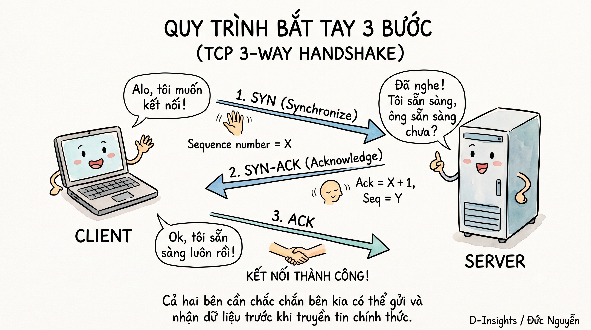
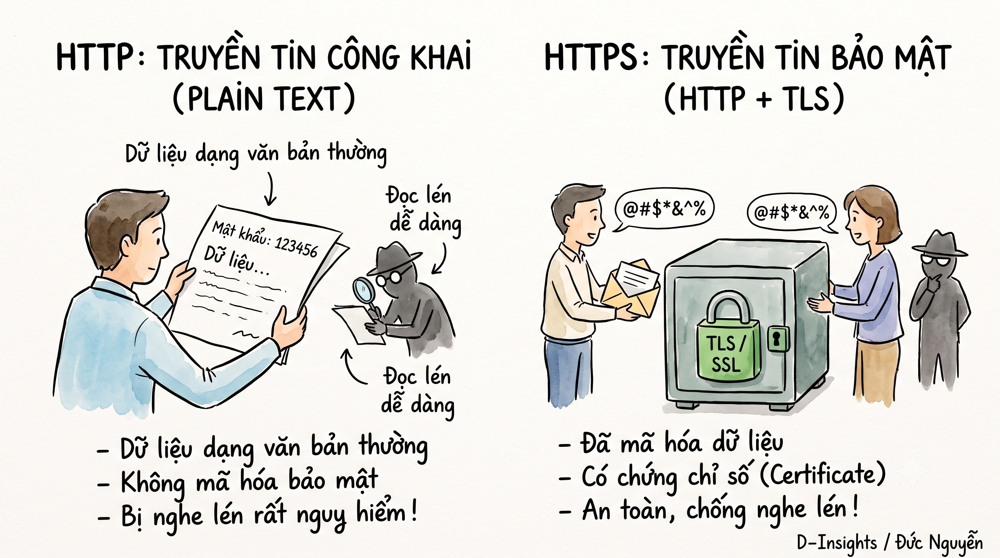
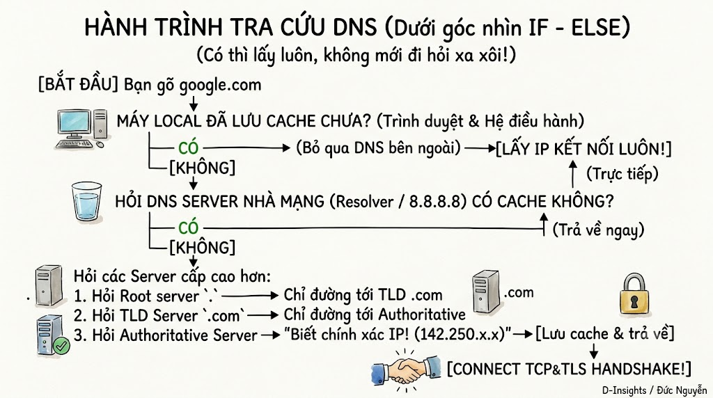

Networking là cách các thiết bị giao tiếp và trao đổi dữ liệu với nhau qua mạng. Trong bài này, mình sẽ đi chậm qua bốn khái niệm nền tảng: TCP và UDP, 3-way handshake, HTTP và HTTPS, cùng DNS Resolution.
1. TCP vs UDP
TCP và UDP đều là giao thức vận chuyển (transport protocol), tức là cách dữ liệu được đóng gói và gửi đi ở tầng Transport trong mô hình OSI.
TCP: gửi thư đảm bảo
Hãy tưởng tượng TCP giống như gửi thư bảo đảm:
- Hai bên phải bắt tay thiết lập kết nối trước khi truyền dữ liệu.
- Mỗi gói tin được đánh số thứ tự.
- Bên nhận gửi xác nhận (ACK) khi đã nhận được dữ liệu.
- Nếu gói tin bị mất, TCP tự động gửi lại.
- Dữ liệu được sắp xếp lại đúng thứ tự trước khi đưa cho ứng dụng.
Đổi lại, TCP chậm hơn và tốn overhead hơn vì phải bắt tay, xác nhận, theo dõi thứ tự và retransmit khi cần.
UDP: gửi bưu thiếp thường
UDP giống như gửi một tấm bưu thiếp:
- Không bắt tay trước, cứ đóng gói rồi gửi đi.
- Không đảm bảo gói tin đến nơi.
- Không đảm bảo các gói đến đúng thứ tự.
- Không tự động gửi lại khi mất gói.
Nhờ vậy, UDP nhanh và ít overhead hơn. UDP phù hợp với video call, game online hoặc DNS query, nơi tốc độ quan trọng hơn việc giữ lại từng gói tin. Trong một cuộc gọi video, bỏ qua một frame cũ thường tốt hơn là dừng hình để chờ frame đó gửi lại.
TCP thường được dùng cho HTTP/HTTPS, truyền file và email, tức những trường hợp dữ liệu cần chính xác đầy đủ.
2. 3-way handshake
Trước khi truyền dữ liệu, TCP cần thiết lập kết nối bằng quy trình gọi là 3-way handshake. Có ba bước:
- SYN: Client gửi yêu cầu kết nối tới server, kèm số thứ tự bắt đầu của mình.
- SYN-ACK: Server đồng ý, gửi số thứ tự của server và xác nhận đã nhận SYN từ client.
- ACK: Client xác nhận đã nhận phản hồi của server. Kết nối chính thức được thiết lập.
Tại sao cần ba bước chứ không phải hai? Vì TCP là kết nối hai chiều. Cả client và server đều cần chắc chắn rằng bên kia có thể gửi và nhận dữ liệu.
Nếu chỉ có SYN rồi SYN-ACK, server vẫn chưa biết chắc client có thực sự nhận được phản hồi hay không. Gói SYN-ACK có thể đã bị mất trên đường về. Bước ACK thứ ba chính là lời xác nhận cuối cùng của client: “Tôi đã nhận được phản hồi, cả hai bên có thể bắt đầu liên lạc.”

3. HTTP vs HTTPS
HTTP truyền dữ liệu dưới dạng plain text, không mã hóa. Nếu ai đó nghe lén được đường truyền, họ có thể đọc nội dung request, trong đó có thể bao gồm thông tin nhạy cảm.
HTTPS là HTTP kết hợp với TLS (Transport Layer Security). Trước khi HTTP request được gửi, hai bên thực hiện TLS handshake để tạo một kênh liên lạc được mã hóa.
TLS handshake diễn ra như thế nào?
- Client gửi Client Hello, thông báo các thuật toán mã hóa mà nó hỗ trợ.
- Server trả về chứng chỉ số (certificate) để chứng minh danh tính và cho biết thuật toán được chọn.
- Client kiểm tra chứng chỉ có hợp lệ không, thường dựa vào một Certificate Authority (CA) đáng tin cậy.
- Hai bên trao đổi để tạo ra một khóa phiên dùng chung.
Từ đó, dữ liệu HTTP được mã hóa bằng khóa phiên. HTTPS có thể chậm hơn một chút ở lần kết nối đầu vì phải thực hiện TCP handshake rồi TLS handshake. Tuy nhiên, sau khi kết nối được thiết lập, tốc độ truyền dữ liệu gần như không khác HTTP; session resume còn giúp giảm số bước ở những lần kết nối sau.

4. DNS Resolution
DNS (Domain Name System) giống như danh bạ điện thoại của Internet. Nó chuyển tên miền dễ nhớ như google.com thành địa chỉ IP để máy tính biết cần kết nối tới đâu.
Khi bạn gõ một tên miền, quá trình tra cứu thường đi theo các bước:
- Browser cache: Trình duyệt kiểm tra kết quả đã lưu gần đây.
- OS cache: Nếu trình duyệt không có, hệ điều hành kiểm tra DNS cache của nó.
- Resolver: Request được gửi tới DNS resolver, thường là DNS của ISP hoặc DNS công cộng như
8.8.8.8. - Root DNS server: Root không trả IP cuối cùng mà chỉ đường tới server quản lý phần đuôi như
.comhoặc.vn. - TLD server: Server của phần đuôi tiếp tục chỉ tới server quản lý domain cụ thể.
- Authoritative name server: Đây là nơi biết chính xác IP tương ứng với tên miền và trả kết quả cuối cùng.
Kết quả sau đó được cache ở nhiều tầng để những lần tra cứu tiếp theo nhanh hơn. Khi đã có IP, trình duyệt mới bắt đầu kết nối tới server.
Vậy điều gì xảy ra khi bạn gõ URL và nhấn Enter?
Đây là câu hỏi gộp cả bốn khái niệm trên:
- DNS Resolution tìm địa chỉ IP của domain.
- Client thực hiện TCP 3-way handshake tới IP đó.
- Nếu là HTTPS, client và server thực hiện thêm TLS handshake.
- Trình duyệt gửi HTTP request.
- Server xử lý request và trả về HTML, CSS, JavaScript cùng các tài nguyên khác.
- Trình duyệt tải, phân tích và render trang web trên màn hình.

Mỗi lần mở một trang web là nhiều lớp giao tiếp nối tiếp nhau: DNS tìm địa chỉ, TCP mở đường, TLS bảo vệ dữ liệu, HTTP trao đổi nội dung.
Câu hỏi tự kiểm tra
Tại sao TCP đáng tin cậy hơn UDP?
Vì TCP có handshake, acknowledgment, retransmission và đảm bảo thứ tự dữ liệu. Đánh đổi là TCP chậm hơn và tốn thêm overhead.
HTTP có phải lúc nào cũng nhanh hơn HTTPS không?
Không. HTTPS có thêm chi phí handshake và mã hóa, nên lần kết nối đầu có thể chậm hơn một chút. Nhưng sau khi kết nối thiết lập xong, khác biệt tốc độ thường rất nhỏ và HTTPS an toàn hơn nhiều.
Nắm được bốn khái niệm này là bạn đã có nền tảng để học tiếp về routing, firewall, load balancer, CDN và nhiều chủ đề network nâng cao hơn.